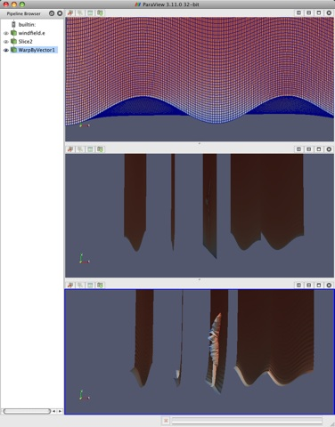

About Paraview
What is ParaView?
ParaView is an open-source, multi-platform application for the visualization and analysis of scientific datasets, primarily those that are defined natively in a two- or three-dimensional space including those that extend into the temporal dimension.
The front end graphical user interface (GUI) has an open, flexible and intuitive user interface that still gives you fine grained and open ended control of the data manipulation and display processing needed to explore and present complex data as you see fit.
ParaView has extensive scripting and batch processing capabilities. The standard scripting interface uses the widely used python programming language for scripted control. As with the GUI, the python scripted control is easy to learn, including the ability to record actions in the GUI and save them out as succinct human readable python programs. It is also powerful, with the ability to write scripted filters that run on the server that have access to every bit of your data on a large parallel machine.
ParaView's data processing and rendering components are built upon a modular and scalable distributed-memory parallel architecture in which many processors operate synchronously on different portions of the data. ParaView's scalable architecture allows you to run ParaView directly on anything from a small netbook class machine up to the world's largest supercomputer. However, the size of the datasets ParaView can handle in practice though varies widely depending on the size of the machine that ParaView's server components are run on. Thus people frequently do both, taking advantage of ParaView's client/server architecture to connect to and control the supercomputer from the netbook.
ParaView is meant to be easily extended and customized into new applications and be used by or make use of other tools. Correspondingly there are a number of different interfaces to ParaView's data processing and visualization engine, for example the web based ParaViewWeb. This book does not focus on these nor does it describe in great detail the programmers interface to the ParaView engine. The book instead focusus on understanding the standard ParaView GUI based application.
User Interface
The different
sections of ParaView's Graphical User Interface (GUI) are shown
below. Of particular importance in the following
discussion are the:

Figure 1.1: ParaView GUI OverView
Modality
One very important thing to keep in mind when using ParaView is that the GUI is very modal. At any given time you will have one "active" module within the visualization pipeline, one "active" view, and one "active" selection. For example when you click on the name of a reader or source within the Pipeline Browser, it becomes the active module and the properties of that filter are displayed in the Object Inspector. Likewise when you click within a different view, that view becomes the active view and the visibility "eye" icons in the Pipeline Browser are changed to show what filters are displayed within this View. These concepts will be described in detail in later chapters [0][1][2]. For now you should be aware that the information displayed in the GUI always pertains to these active entities.
Basics of Visualization
Put simply, the process of visualization is taking raw data and converting it to a form that is viewable and understandable to humans. This enables a better cognitive understanding of our data. Scientific visualization is specifically concerned with the type of data that has a well-defined representation in 2D or 3D space. Data that comes from simulation meshes and scanner data is well suited for this type of analysis.
There are three basic steps to visualizing your data: reading, filtering, and rendering. First, your data must be read into ParaView. Next, you may apply any number of filters that process the data to generate, extract, or derive features from the data. Finally, a viewable image is rendered from the data and you can then change the viewing parameters or rendering modality for best visual effect.
The Pipeline Concept
In ParaView, these steps are made manifest in a visualization pipeline. That is you visualize data by building up a set of modules, each of which takes in some data, operates on it, and presents the result as a new dataset. This begins with a reader module that ingests data off of files on disk.
Reading data into ParaView is often as simple as selecting Open from the File menu, and then clicking the glowing Accept button on the reader's Object Inspector tab. ParaView comes with support for a large number of file formats[3], and its modular architecture makes it possible to add new file readers[4].
Once a file is read, ParaView automatically renders it in a view. In ParaView, a view is simply a window that shows data. There are different types of views, ranging from qualitative computer graphics rendering of the data to quantitative spreadsheet presentations of the data values as text. ParaView picks a suitable view type for your data automatically, but you are free to change the view type, modify the rendering parameters of the data in the view, and even create new views simultaneously as you see fit to better understand what you have read in. Additionally, high level meta information about the data including names, types and ranges of arrays, temporal ranges, memory size and geometric extent can be found in the Information tab.
You can learn a great deal about a given dataset with a one element visualization pipeline consisting of just a reader module. You can learn much more, and in fact perform arbitrarily complex analyses and data manipulations, adding modules to build up the pipeline. In ParaView you can create arbitrarily complex visualization pipelines, including ones with multiple readers, merging and branching pipelines. You build up a pipeline by choosing the next filter in the sequence from the Filters menu. Once you click accept, this new filter will read in the data produced by the formerly active filter and perform some processing on that data. The new filter then becomes the active one. Filters then are created differently from but operate in the same manner as readers. At all points you use the Pipeline Inspector to choose the active filter and then the Object Inspector to configure it.
The Pipeline Browser is where the overall Visualization Pipeline is displayed and controlled from. The Object Inspector is where the specific parameters of one particular module within the pipeline are displayed and controlled from. The Object Inspector has three tabs, one presents the parameters of the processing done within that module, another presents the parameters of how the output of that module will be displayed in a view, and the last presents the meta information about the data produced by the module as described above.
Figure 1,2 demonstrates a three element visualization pipeline, where the output of each module in the the pipeline is displayed in its own view. A reader takes in a vector field, defined on a curvilinear grid, which comes from a simulation study of a wind turbine. Next a slice filter produces slices of the field on five equally spaced planes along the X axis. Finally a warp filter warps those planes along the direction of the vector field, which primarily moves the planes downwind but also shows some complexity at the location of the wind turbine.

Figure 1.2: A Three Element visualization pipeline"
There are more than one hundred filters available to choose from, all of which manipulate the data in different ways. The full list of filters is available in the Appendix and within the application under the Help menu. Note that many of the filters in the menu will be grayed out and not selectable at any given time. That is because any given filter may only operate on particular types of data. For example the Extract Subset filter will only operate on structured data sets so it is only enabled when the module you are building on top of produces image data, rectilinear grid data, or structured grid data. (These input restrictions are also listed in the Appendix and help menu). In this situation you can often find a similar filter which does accept your data, or apply a filter which transforms your data into the required format. In ParaView 3.10 you can ask ParaView to try to do the conversion for you automatically, by clicking "Auto convert properties" in the application settings. The mechanics of applying filters are described fully in the Manipulating Data chapter.
Making Mistakes
Frequently, new users of ParaView falter when they open their data, or apply a filter, and do not see it immediately because they have not pressed the Apply button. ParaView was designed to operate on large datasets, for which any given operation could take a long time to finish. In this situation you need the Apply button so that you have a chance to be confident of your change before it takes effect. The highlighted Apply button is a reminder that the parameters of one or more filters are out of sync with the data that you are viewing. Hitting the Apply button accepts your change (or changes) whereas hitting the Reset button reverts the options back to the last time you hit Apply. If you are working with small datasets, you may want to turn off this behavior with the Auto Accept setting under the Application Settings.
The Apply behavior circumvents a great number of mistakes but not all of them. If you make some change to a filter or to the pipeline itself and later find that you are not satisfied with the result, hit the Undo button. You can undo all the way back to the start of your ParaView session and redo all the way forward if you like. You can also undo and redo camera motion by using the camera undo and redo buttons located above each view window.
Persistent Sessions
If on the other hand you are satisfied with your visualization results, you may want to save your work so that you can return to it at some future time. You can do so by using ParaView's Save State ("File"|Save State) and Save Trace ("Tools"|Save Trace) features. In either case, ParaView produces human readable text files (XML files for State and Python script for Trace) that can be restored or modified and restored later. This is very useful for batch processing, which is discussed in the Python Scripting chapter.
To save state means to save enough information about the ParaView session to restore it later and thus show exactly the same result. ParaView does so by saving the current visualization pipeline and parameters of the filters within it.
If you turn on a trace recording when you first start using ParaView, saving a trace can be used for the same purpose as saving state. However, a trace records all of your actions, including the ones that you later undo, as you do them. It is a more exact recording of not only what you did, but how you did it. Traces are saved as python scripts, which ParaView can play back in either batch mode or within an interactive GUI session. You can therefore use traces then to automate repetitive tasks by recording just that action. It is also an ideal tool to learn ParaView's python scripting API.
Client/Server Visualization
With small datasets it is usually sufficient to run ParaView as a single process on a small laptop or desktop class machine. For large datasets, a single machine is not likely to have enough processing power and much more importantly memory to process the data. In this situation you run an MPI parallel ParaView Server process on a large machine to do computationally and memory expensive data processing and/or rendering tasks and then connect to that server within the familiar GUI application.
When connected to a remote server the only difference you will see will be that the visualization pipeline displayed in the Pipeline Browser will begin with the name of the server you are connected to rather than the word 'builtin' which indicates that you are connected to a virtual server residing in the same process as the GUI. When connected to a remote server, the File Open dialog presents the list of files that live on the remote machine's file system rather than the client's. Depending on the server's capabilities, the data size and your application settings ("Edit"|Settings|Render View|Server) the data will either be rendered remotely and pixels will be sent to the client or the geometry will be delivered and rendered locally. Large data visualization is described fully in the Client Server Visualization Chapter.